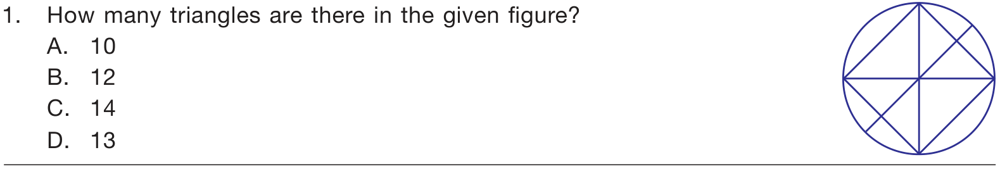
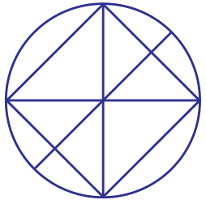
10
12
14
13
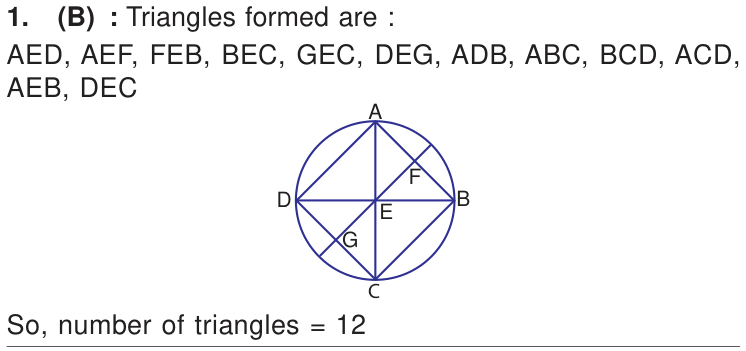
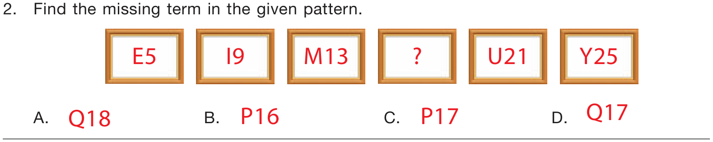
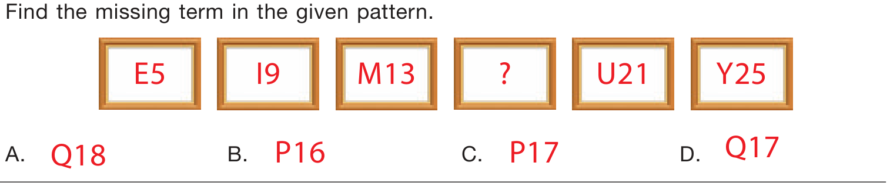
Option A
Option B
Option C
Option D
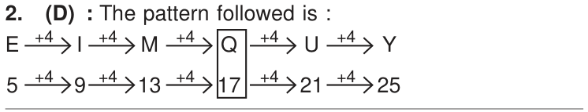
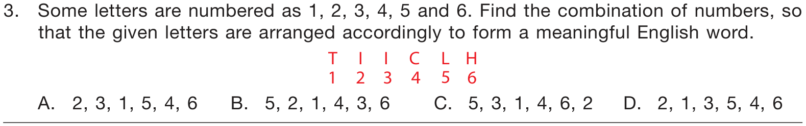
Some letters are numbered as 1, 2, 3, 4, 5 and 6. Find the combination of numbers, so that the given letters are arranged accordingly to form a meaningful English word.
T I I C L H
1 2 3 4 5 6
2, 3, 1, 5, 4, 6
5, 2, 1, 4, 3, 6
5, 3, 1, 4, 6, 2
2, 1, 3, 5, 4, 6
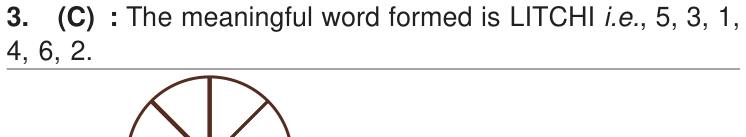
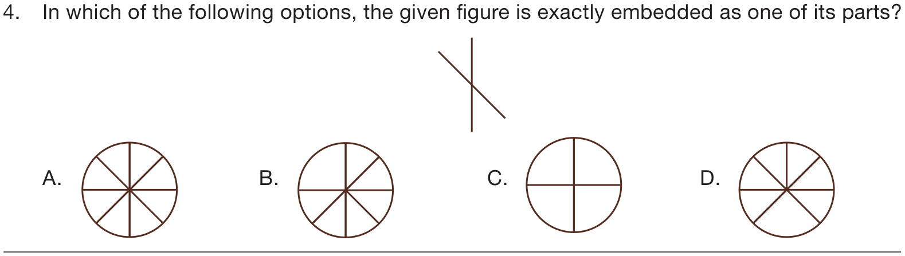
In which of the following options, the given figure is exactly embedded as one of its parts?
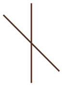
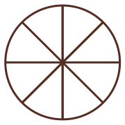
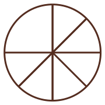
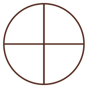
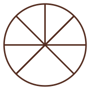
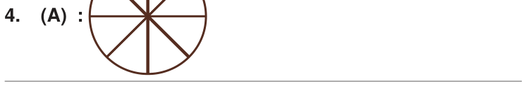
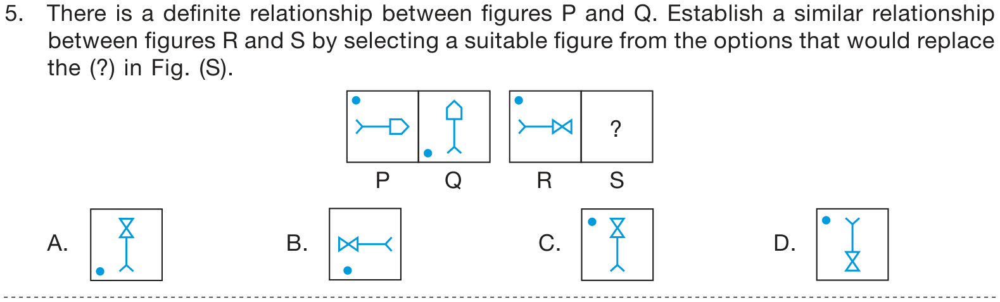
There is a definite relationship between figures P and Q. Establish a similar relationship between figures R and S by selecting a suitable figure from the options that would replace the (?) in Fig. (S).
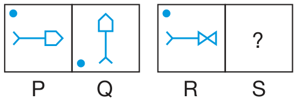
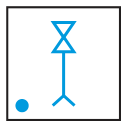
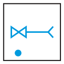
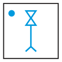
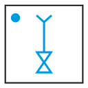
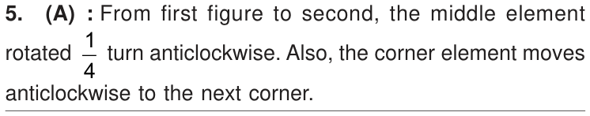
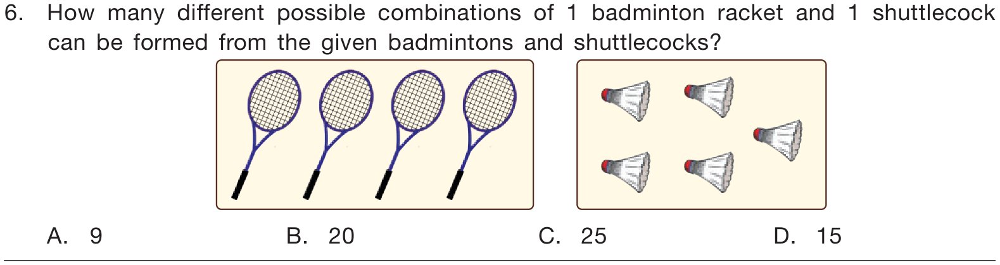
How many different possible combinations of 1 badminton racket and 1 shuttlecock can be formed from the given badmintons and shuttlecocks?
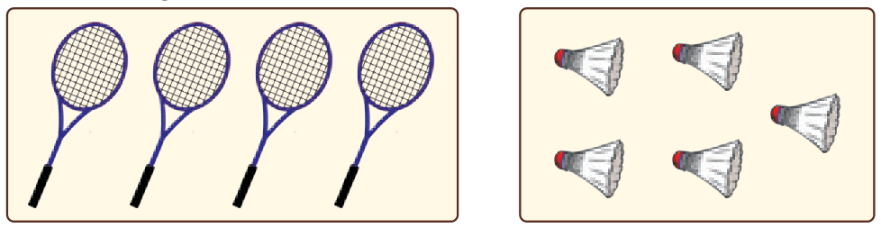
9
20
25
15
Number of badminton rackets = 4 Number of shuttlecocks = 5
\ Possible combinations = 4 × 5 = 20
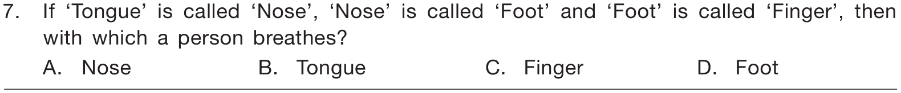
If ‘Tongue’ is called ‘Nose’, ‘Nose’ is called ‘Foot’ and ‘Foot’ is called ‘Finger’, then with which a person breathes?
Nose
Tongue
Finger
Foot
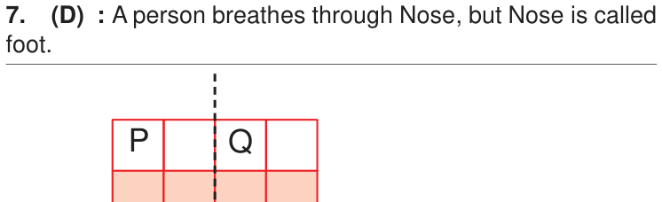
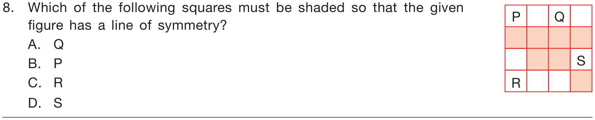
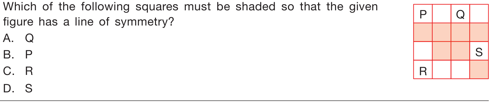
Option A
Option B
Option C
Option D
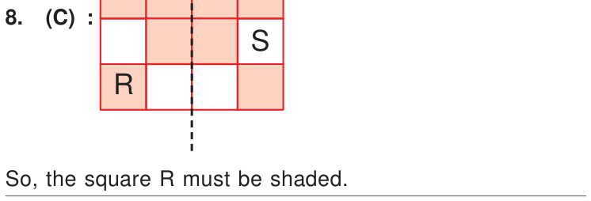
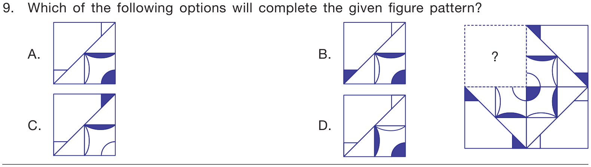
Which of the following options will complete the given figure pattern?
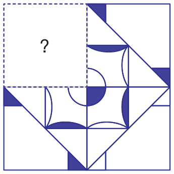
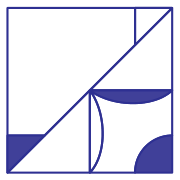
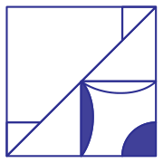
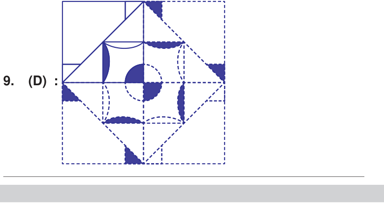
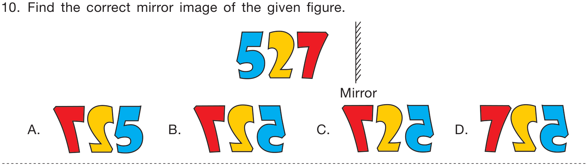
Find the correct mirror image of the given figure.
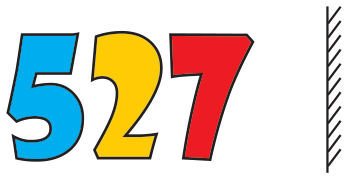
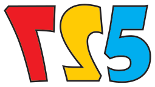
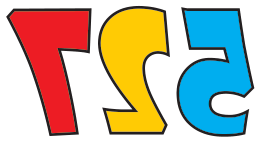
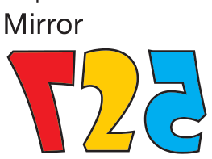
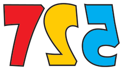
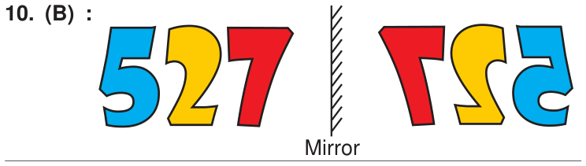
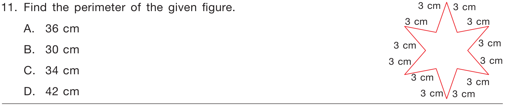
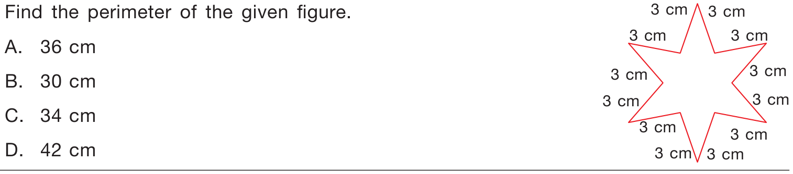
Option A
Option B
Option C
Option D
Perimeter of the figure = (12 × 3) cm = 36 cm
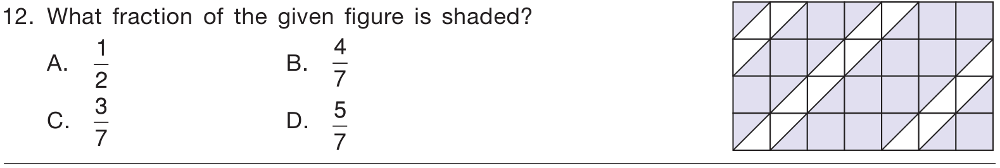
What fraction of the given figure is shaded?
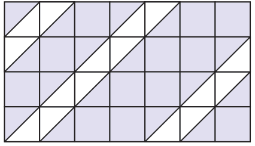
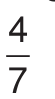
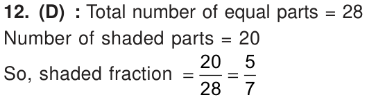
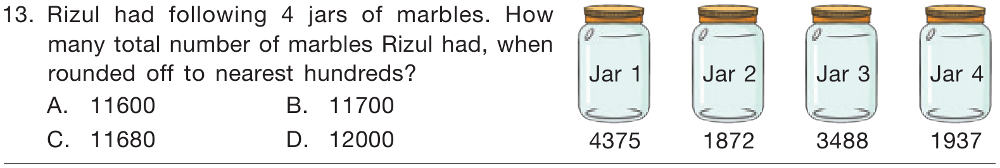
Rizul had following 4 jars of marbles. How many total number of marbles Rizul had, when rounded off to nearest hundreds?
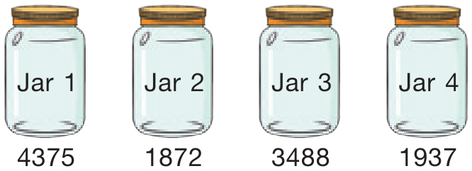
11600
11700
11680
12000
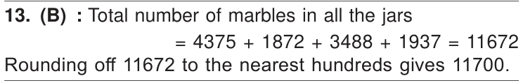
If Saumya wants to pour whole water from jug into the glasses of 400 mL capacity, then how many glasses will she need?
7
8
6
9
Total quantity of water = 3L 200 mL = 3200 mL Capacity of one glass = 400 mL
So, number of glasses needed = 3200 ÷ 400 = 8
The number shown on the abacus is written as ___________.
Two hundred forty three hundred seven hundred fifteen
Twenty four thousand three thousand seven hundred fifteen
Two lakh forty three thousand seven hundred fifteen
Two lakh forty three thousand eight hundred fifteen
The number shown on the abacus is 2,43,715 i.e., two lakh forty three thousand seven hundred fifteen.
The bar graph given below represents the marks scored by four friends in a test. Study it carefully and answer the following question.
Which two students scored a total of 125 marks?
Rupali and Anil
Arun and Anil
Akash and Arun
Rupali and Arun
The smallest number of squares that must be shaded so that the figure has a line of symmetry is _____.
2
3
4
5
How many multiples of 15 are there in between 95 and 185?
6
5
7
8
Multiples of 15 between 95 and 185 are : 105, 120, 135, 150, 165 and 180 i.e., 6 in number.
What is the weight of marble P?
300 g
250 g
240 g
350 g
2
3
6
4
There are 4758 men, 3978 women and 2650 children in a village. What is the total population of the village?
11386
12466
10836
13478
Number of men = 4758
Number of women = 3978
Number of children = 2650
So, total population of the village = 4758 + 3978 + 2650 = 11386
Last year, Kartik celebrated his eighteenth birthday. This year his brother Swastik is twice as old as Kartik. How old will be Swastik in five years time?
47 years
38 years
41 years
43 years
Present age of Kartik = (18 + 1) years = 19 years So, age of Swastik = (2 × 19) years = 38 years
Now, age of Swastik in five years time = (38 + 5) years
= 43 years
For a project Simmi cut a piece of paper into a shape with 4 sides, but none of them are of the same length. What is the shape of the paper?
Rectangle
Quadrilateral
Square
Pentagon
As, the shape has 4-sides. So, it is a quadrilateral.
Vedika plans to read a book of 2470 pages. She reads 26 pages in 1 day. In how many days will she read the complete book, if she reads equal number of pages every day?
94
95
85
105
Mrs Sharma bought 225 m 18 cm of cloth from shop P, 212 m 20 cm of cloth from shop Q and 140 m 5 cm of cloth from shop R. What is the total length of cloth she bought from all the shops?
597 m 43 cm
477 m 48 cm
577 m 43 cm
497 m 48 cm
Total length of cloth bought by Mrs Sharma = 225 m 18 cm + 212 m 20 cm + 140 m 5 cm = (22518 + 21220 + 14005) cm
= 57743 cm or 577 m 43 cm
Niharika has ₹ 1500. She wants to purchase 18 sacks of rice as shown. How much more money does she need?
₹ 660
₹ 560
₹ 540
₹ 650
Cost of 1 sack of rice = ₹ 120
So, cost of 18 sacks of rice = ₹ 120 × 18 = ₹ 2160 Amount of money Niharika has = ₹ 1500
So, amount of more money needed = ₹ (2160 – 1500) = ₹ 660
1st 1st 2nd 2nd 2nd
Ramya bought the given microwave. What is the number name for the cost of the given microwave?
Two eighty four thousand seventy five
Twenty eight thousand four thousand seventy five
Twenty eight thousand four hundred seventy five
Cost of given microwave = ₹ 28475 i.e., twenty eight thousand four hundred seventy five.
A rectangular playground is 150 m long and 80 m wide. What distance did Kashi cover in going 5 times around the playgroud?
2 km 300 m
1 km 150 m
2 km 100 m
3 km 300 m
Length of rectangle = 150 m
Breadth of rectangle = 80 m
So, distance covered in 1 round of playground
= Perimeter of playground = 2 (150 + 80) m = 460 m \ Distance covered in 5 rounds = (460 × 5) m
= 2300 m or 2 km 300 m
Select the INCORRECT option.
A square has all four sides equal.
A rectangle has two lines of symmetry.
A figure which has the same start point and end point is called a closed figure.
Diameter of a circle is always less than its radius.
Diameter of a circle is always greater than its radius.
Find the sum of the shaded fractions of the given figures.
72 5 4
48 5 8
48 6 4
72 6 8
Option A
Option B
Option C
Option D
(a) Kesar flavour is liked by exactly 40 students.
(b) Number of students like Rose, Badam and Pista flavours altogether = 20 + 50 + 30 = 100
Option A
Option B
Option C
Option D